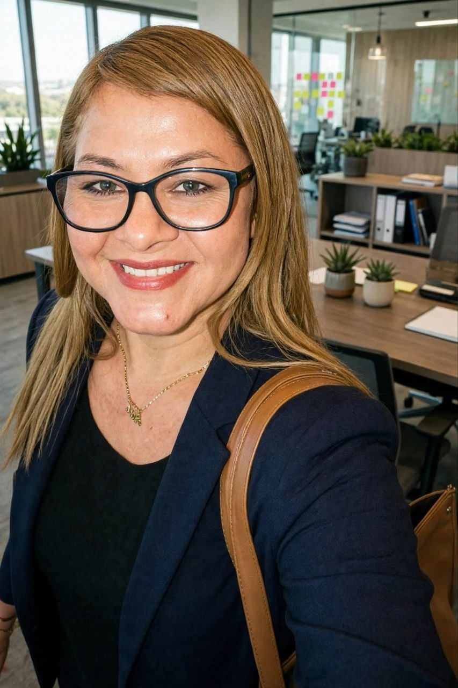

Gestão Documental: do papel ao ambiente digital
Material introdutório sobre os principais conceitos e práticas da gestão documental moderna.
Do documento ao dado. Da memória à informação estratégica.
“Organizamos documentos. Preservamos informações. Protegemos memórias.”
Solicite uma ConsultoriaA ARQUIVIA é uma consultoria especializada em gestão de documentos e arquivos, oferecendo soluções para organizações públicas, privadas e do terceiro setor. Sua atuação contempla tanto os documentos convencionais, produzidos em suporte físico, quanto os documentos digitais e eletrônicos, buscando garantir organização, acesso, segurança, preservação e recuperação das informações.


Oferecer soluções arquivísticas que transformem documentos desorganizados em informação acessível, segura e estratégica para as organizações.
Ser uma consultoria reconhecida pela qualidade técnica e pela inovação na gestão de documentos e arquivos convencionais e digitais.
Ética profissional, Responsabilidade arquivística, Acesso à informação, Preservação da memória, Segurança documental, Inovação, Transparência, Sustentabilidade e Compromisso com a legislação.
Levantamento da situação documental, análise de fluxos e identificação de falhas físicas e digitais.
Entregável: Relatório de Diagnóstico Arquivístico.Estruturação de instrumento para categorizar documentos conforme as funções da empresa, agilizando a busca.
Entregável: Plano de Classificação Documental.Definição de prazos de guarda, eliminação e seleção de documentos de valor histórico ou administrativo.
Entregável: Tabela de Temporalidade e Destinação.Higienização, ordenação, acondicionamento em caixas e etiquetagem técnica de acervos.
Entregável: Arquivo físico organizado e acessível.Procedimentos para criação, guarda e destinação em sistemas informatizados.
Estratégias para garantir acessibilidade e legibilidade a longo prazo.
Controle de acesso, garantia de integridade e padronização de dados.
Eliminação do acúmulo desordenado através de diagnóstico, classificação e tabela de temporalidade.
Padronização de arquivos armazenados de forma dispersa em servidores e computadores.
Tratamento de acervo histórico com criação de instrumentos de pesquisa e descrição.
Mapeamento completo da massa documental e proposição de plano de ação gradual.
Material introdutório sobre os principais conceitos e práticas da gestão documental moderna.
Guia prático para organizações que desejam otimizar a recuperação de informações.
Análise dos riscos de armazenamento sem padronização no ambiente eletrônico.
Material explicativo sobre classificação documental e sua importância para a gestão dos arquivos.
Texto sobre os riscos da perda de documentos digitais e a importância das estratégias de preservação.
Corrente: Documentos frequentemente
consultados.
Intermediário: Documentos aguardando prazo de
guarda com pouca consulta.
Permanente: Documentos de valor histórico ou
probatório que nunca devem ser destruídos.
Dados estruturados que descrevem, explicam, localizam ou facilitam a recuperação de documentos digitais.
Instrumento aprovado por autoridade competente que determina o tempo de permanência de um documento em cada fase e sua destinação final (eliminação ou guarda permanente).
E-mail: contato@arquiviaconsultoria.com.br
WhatsApp: (91) 99109-1609
Atendimento: Seg. a Sex. das 8h às 18h
Localização: Belém – Pará, Brasil